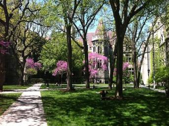
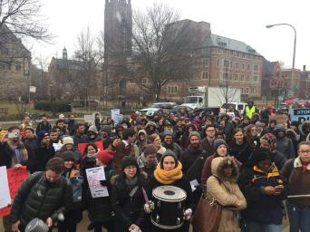

Put trust back in government.
Hi! We're UC Trust. We're a slate of three, running to represent you in UChicago Student Government.
We're excited to tell you who we are and what we stand for.
Meet Dinesh
Hey! I'm Dinesh, and I'd be honored to serve you next year as the Undergraduate Liaison to the Board of Trustees. I'm a member of the Class of 2022 and I’m pursuing a BA in Pub Pol with an MA in International Relations. I’m very concerned about campus sustainability and continued complaints about SHS and SCS. With the backing of University Trustees, I will pressure the administration to change on specific policy proposals, including those outlined below. I'm especially involved with political and arts RSOs across campus, including the IOP, UC Dems, and Voices In Your Head. At my high school in Washington, DC, I held major leadership positions and built personal relationships with my school’s board members and senior administrators. Feel free to reach out and ask me any questions about the issues, my qualifications, or just to say hi!
↳more about Dinesh
Meet Natalie
I’m Natalie Wang and I’m running for Community and Government Liaison and 2022 Class Council. As Liaison, I will work to increase community engagement, promote local businesses and artists, and listen to the voices of the students and non-university community. One of my most rewarding experiences in high school was working with underprivileged families, and I hope to bring that love for community engagement to the table as Liaison. At my high school in LA, I had prior experience in student government and administrative work that will allow me to accomplish the goals on my platform. I hope to earn your vote in the election!
↳more about Natalie
Meet Aazer
Hi! My name is Aazer Siddiqui, and I'm a first-year majoring in linguistics and philosophy. I'm running to represent the class of 2022 on College Council because I'm not satisfied with the current state of this campus, especially on issues of sustainability. I've been on the front lines of environmental work — I volunteered on conservation projects with Americorps out West, and I've been involved in community-based sustainable design projects in and around my hometown, Boston. At the end of the day, we need people who care on College Council. We as students need to take a stand, and fight for what we deserve — a greener campus, better health services, and solidarity with grad students. I'm optimistic that we can work towards a brighter future together.
↳more about Aazer
Sustainability
Lowering our footprint

We need to increase the number and magnitude of sustainability initiatives on campus. We propose a fossil fuel divestment campaign and initiatives to reduce single-use plastics, as well as a move towards composting whenever possible. The current recycling program should be audited and a program informing students about Chicago’s recycling policies should be implemented. We also suggest a SG-organized thrift shop, reducing clothing waste while benefiting students. All new construction should be LEED certified — the new dorm is currently not on track to be. The university administration needs to support these initiatives, at least to the point that we are on par with other schools with similar resources.
Health
More funds, less wait

Students should not be waiting over 6 weeks for an appointment at Student Health Services or to meet a therapist at Student Counseling Services, but this situation is all too common. Timely health services should be a priority for the administration, and wait time figures should published online in the name of transparency — these numbers are already tracked internally. Health services are understaffed and underfunded, and despite the best efforts of the employees, deficiencies are significant. While the new Wellness Center is a step in the right direction, SG needs to make sure it works as intended.
Student Unity
Standing together

We support GSU, and we know that many of you do as well. But right now, it is difficult to direct this energy towards meaningful change. When grad students and undergrads work together, it’s a win-win — we undergrads will have fewer cancelled classes, and grad students will benefit from our support as fellow students who can directly pressure the administration. Student government can and should take the lead in supporting graduate-undergraduate unity. Additionally, we need increased student engagement with SG to hold the administration accountable for student interests. Students should be aware of SG activities, through posts in class Facebook pages, completion and regular maintenance of the SG website, and other avenues. A vocal, aware, and unified student body can push for more projects to improve student well-being.
volunteer
We can't do it without you.
Passionate about our issues? Want to make a difference? Join our campaign and help reform our campus.
How will you help?
contact
Want to learn more?
Still have questions for us? Want to reach out about an issue? We want to hear you.
Tell us what's important to you.